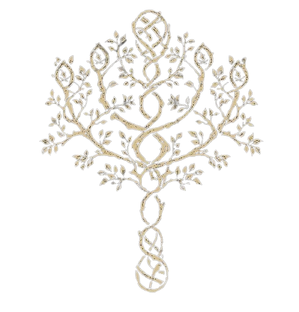
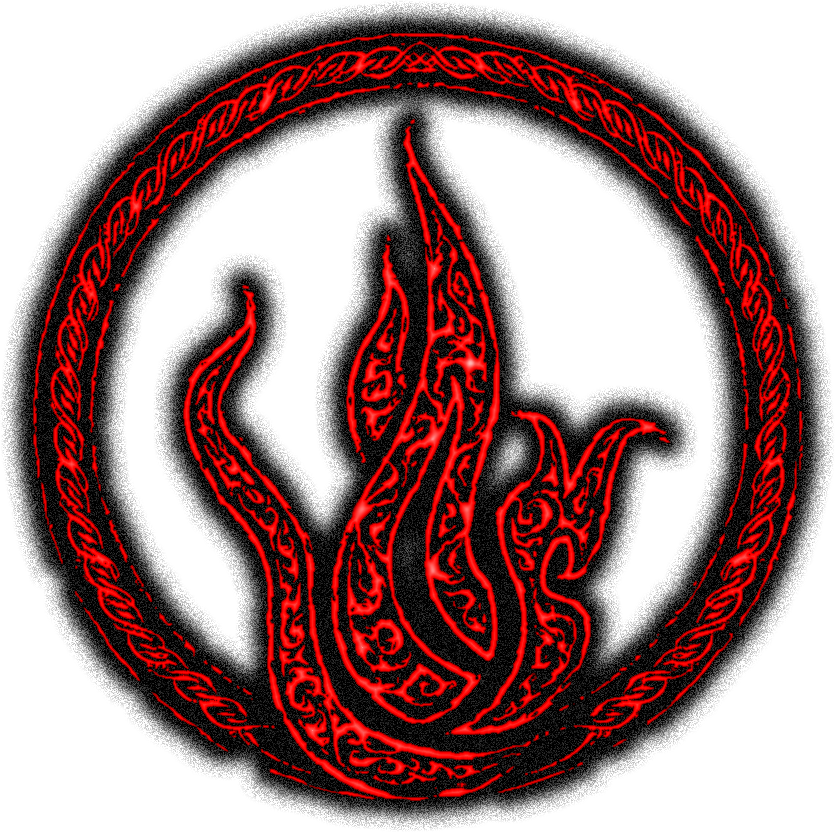
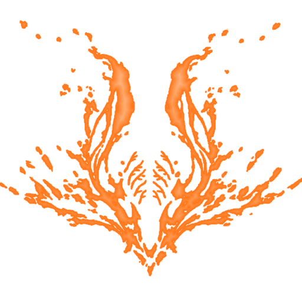
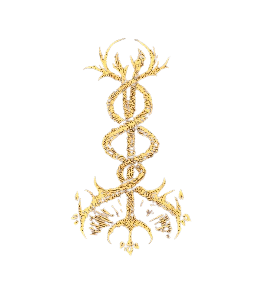
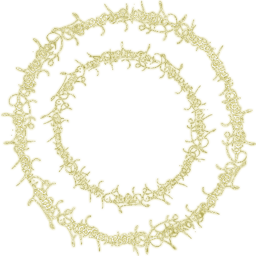

Bestiais
Seres tomados por instintos primitivos e corpos deformados por maldições antigas.
Aparência: Pele espessa, olhos brilhantes e garras afiadas.
Buffs: +10% de dano físico, resistência aumentada contra veneno.
Debuffs: Vulnerabilidade a magias sagradas e perda de sanidade em áreas sagradas.

Sanguíneos
Veneradores do sangue como fonte de poder. Envoltos em véus vermelhos, seguem rituais proibidos.
Aparência: Roupas encharcadas em sangue seco, olhos carmesins.
Buffs: Regeneração com ataques, +15% dano contra inimigos com sangramento.
Debuffs: Redução da defesa geral e fraqueza a fogo.

Comunhão Dracônica
Aqueles que devoram corações de dragões e herdam seus dons selvagens e sua loucura.
Aparência: Escamas cobrindo o corpo, olhos reptilianos.
Buffs: Habilidades de sopro de dragão, +10% resistência elemental.
Debuffs: Sofrem dano extra de ataques mágicos e vulnerabilidade a relâmpagos.

Discípulos do Culto do Dragão
Cavaleiros e fanáticos da fé relampejante. Canalizam poder puro do trovão.
Aparência: Armaduras douradas e tatuagens reluzentes.
Buffs: +20% dano elétrico, resistência a paralisia.
Debuffs: Vulneráveis à magia negra e fraqueza contra gelo.

Filhos da Árvore Áurea
Escolhidos pela luz do Erdtree. Carregam bênçãos antigas e uma fé inabalável.
Aparência: Pele brilhante e símbolos dourados pelo corpo.
Buffs: Cura aumentada em 25%, maior resistência a maldições.
Debuffs: Redução na resistência física e lentidão em áreas corrompidas.

Portadores da Chama da Ruína
Caminham como arautos do fim. Consumidos por chamas eternas, irradiam destruição.
Aparência: Corpo queimado e olhos incandescentes.
Buffs: +25% dano de fogo, imunidade a queimaduras.
Debuffs: Perda constante de vida fora de combate e fraqueza a gelo.

Abraçados pela Chama Frenética
Loucos por natureza, seus olhos ardem com o frenesi da verdade absoluta.
Aparência: Olhos dourados flamejantes, pele com rachaduras de calor.
Buffs: +30% em dano frenético, imunidade à loucura.
Debuffs: Redução severa da defesa e ataques aleatórios em frenesi.

Apóstolos da Pele Divina
Esfolam os deuses e vestem suas peles. Mestres do obscuro e da blasfêmia.
Aparência: Corpos deformados cobertos por pele negra.
Buffs: +20% dano sombrio, absorvem vida com feitiços.
Debuffs: Fraqueza extrema a luz e ataques sagrados.

Guardas da Ordem Dourada
Defensores da verdadeira fé e da lógica divina. Julgam com lâminas santificadas.
Aparência: Vestes brancas com detalhes dourados.
Buffs: +15% resistência mágica, aumento de fé e inteligência.
Debuffs: Fraqueza a ataques físicos diretos e venenos.

Jurados da Árvore Escarlate
Últimos defensores de uma ordem esquecida, escondidos sob a neve. Carregam consigo cicatrizes da realeza perdida.
Aparência: Trajes rasgados mas nobres, cobertos por neve e sangue seco.
Buffs: +10% resistência mágica, imunidade ao frio.
Debuffs: Redução na força física e fraqueza contra fogo.

Filhos de Messmer
Nascidos das cinzas da guerra, alimentam-se de chamas carmesins e promessas de vingança.
Aparência: Chamas vermelhas percorrem seus corpos como tatuagens vivas.
Buffs: +20% em feitiços de fogo, aumento de moral ao matar.
Debuffs: Fraqueza a gelo e chance de autocombustão em áreas secas.

Servos da Podridão
Escolhidos pela Flor Escarlate, espalham a podridão como bênção divina.
Aparência: Corpos cobertos de bolores e pétalas carmesins.
Buffs: +25% em ataques de podridão, resistência a venenos.
Debuffs: Redução de defesa e -10% de velocidade de movimento.

Profetas da Espiral
Veem além da realidade comum, canalizam feitiços nunca ditos.
Aparência: Olhos espiralados, roupas com runas flutuantes.
Buffs: +30% dano com feitiços raros, maior foco.
Debuffs: Vulneráveis a interrupções e maldições mentais.

Discípulos dos Dois Dedos
Guiados pelas vozes silenciosas da Vontade Maior. Vivem para servir ao ciclo eterno.
Aparência: Marcas douradas nas mãos e véus sagrados.
Buffs: Cura automática lenta, +15% fé.
Debuffs: Vulnerabilidade a ataques sombrios e desespero ao ver a morte de aliados.